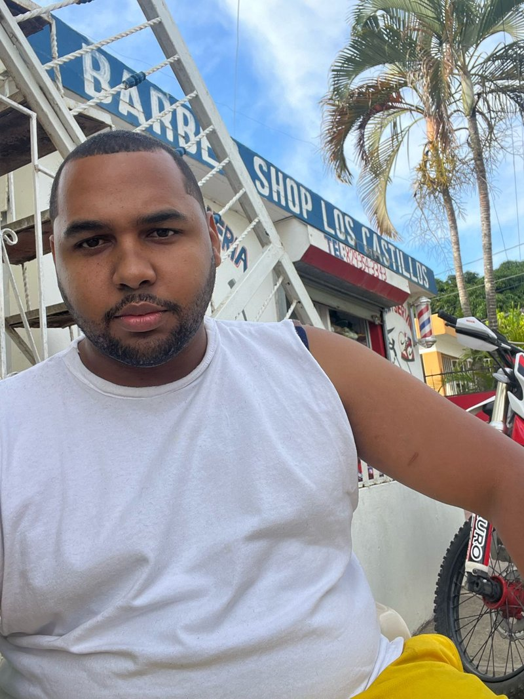
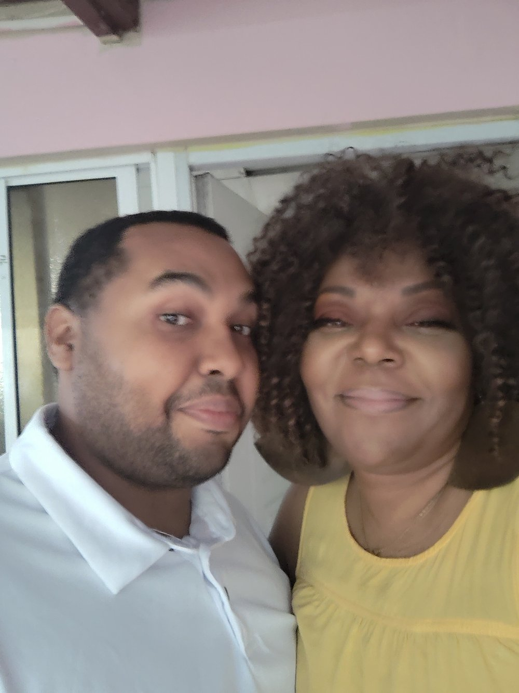

30 years as a Registered Nurse. One life-changing decision. And now a mission to help you find your version of bliss too.
I love nursing. I want to be clear about that. The patients, the purpose, the moments where you know you made a real difference — I would not trade those for anything.
But after three decades in North American healthcare, I was running on empty. The short staffing. The mandatory overtime. The documentation that never ends. The feeling that no matter how much you gave, it was never enough. I was burned out in a way that sleep could not fix.
I kept telling myself: "Just a few more years. Then I will take a break. Then I will travel. Then I will live my life." But then never came. Until it did.
"I made a decision that terrified me and changed everything. I chose myself."
Meeting Ricardo — a native Dominican and 15-year police officer — opened a door I did not even know was there. I started visiting the Dominican Republic. Then staying longer. Then one day I realized: this is where I belong right now.
The cost of living is a fraction of what it was back home. The pace of life actually allows you to breathe. The weather is warm year-round. And Ricardo's deep roots — legally, professionally, and personally — meant I had access to the kind of local knowledge most expats spend years trying to find.
And I thought: I cannot be the only nurse who needs this. I am going to build something for every Denise, every Maria, every healthcare professional who is exactly where I was — and needs someone to show them the way out.
So I did. That is Burnout to Bliss Abroad.
Your move to the Dominican Republic is only as safe as the people guiding you. Ricardo is your local advantage.

Ricardo is a native Dominican with 15 years on the DR police force and deep roots across the country — professionally, culturally, and personally. He holds a law degree in the DR but does not practice in court. Instead, he has built a growing word-of-mouth consulting practice helping expats navigate life in the Dominican Republic.
When expats have questions about local processes, paperwork, or how things actually work on the ground — Ricardo gives them straight answers. If something involves a police matter, he knows exactly who to speak to within the department. If someone needs an attorney to represent them in court, he connects them with a trusted colleague. No guesswork. No runaround.
"Most expat resources give you general information. Ricardo tells you what you actually need to do."
Visa questions, residency steps, and paperwork — Ricardo walks you through what you can do yourself and connects you with the right people when you need more.
Open DR accounts, understand the currency, and set up your financial life abroad without rookie mistakes.
Neighborhoods, landlords, safety — Ricardo's network means you find the right home, not just any home.
I am a mother of two grown sons and a grandmother to Taylor and Justin. This was not a decision I made on a whim. I weighed it carefully — the same way you are weighing it right now.
What I can tell you from lived experience is this: you do not have to choose between your family and your peace of mind. You can visit. They can visit you. The Dominican Republic is not on the moon — it is 3 hours from Miami.
And when your grandchildren come to stay, they are going to love every single minute.
This life is possible. Not just for me. For you too.

"She is not selling a dream. She is showing you a door that is already open. You just have to decide to walk through it."
— Community Member Testimonial
Start with the free community. Download the free guide. Or book a 30-minute call and let us talk through your specific situation. There is no pressure and no pitch.